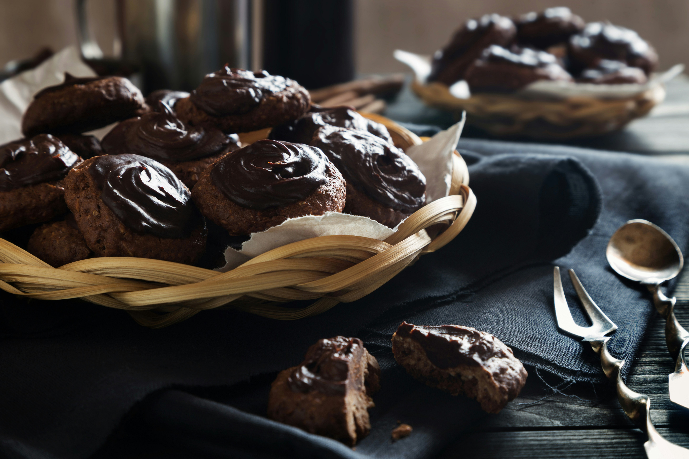

Crumbl Chocolate Cake Cookie
A rich chocolate cookie with a soft, cake-like center and lots of chocolate flavor. Sweet, soft, and perfect for anyone who loves chocolate desserts.
Ingredients
For the Cookies
- Softened Butter
- Granulated Sugar
- Brown Sugar
- Eggs
- Corn Syrup
- Vanilla
- All Purpose flour
- Dutch Processed Cocoa
- Cornstarch
- Baking Soda
- Salt
- Semi Sweet Chocolate Chips
For the Chocolate Icing
- Softened, Room-Temperature Butter
- Cream Cheese
- Cocoa Powder
- Powdered Sugar
- Vanilla
- Milk
Instructions
How To Make Chocolate Cake Cookies
- Preheat the oven to 350°.
- In a stand mixer, cream together the butter and the sugars. Add the eggs, corn syrup and vanilla and mix again until the batter is light and fluffy. Add in the flour, cocoa, salt, cornstarch and baking soda and mix until combined.
- Fold in the chocolate chips being careful not to overmix your dough.
- Separate the dough into twelve ½ cup portions. Roll each piece into a ball and place 6 balls per cookie sheet. Press down on each ball to flatten it slightly.
- Bake for 15-17 minutes. You will know they are done when the top begins to crinkle and the no longer looks wet. DO NOT OVER BAKE! If your cookies end up dry, they were over baked. You’ll want to pull them out as soon as the tops begin to crackle.
How To Make Chocolate Frosting
- While the cookies are cooling, make your frosting by whipping the butter and cream cheese together until smooth.
- Next, add the powdered sugar in one cup at a time. You can add a tsp or so of milk or cream to help incorporate the powdered sugar, if needed. Be careful to not add too much though, or your frosting will end up runny.
- Once all of the your powdered sugar has been added, add the cocoa powder and vanilla.
- When your powdered sugar and cocoa are mixed in, add milk or cream 1 tsp at a time until your frosting as reached the desired consistency if needed. Be careful not to add too much liquid to the frosting at a time. A little goes a long way when you are working with powdered sugar.
- Add the frosting to a piping bag fit with a large closed star tip (tip 2D).
- Pipe the frosting onto your cookie in a spiral, starting at the center of the cookie, working your way out. Make sure to keep the frosting bag straight up and down while you pipe.
- Serve warm.